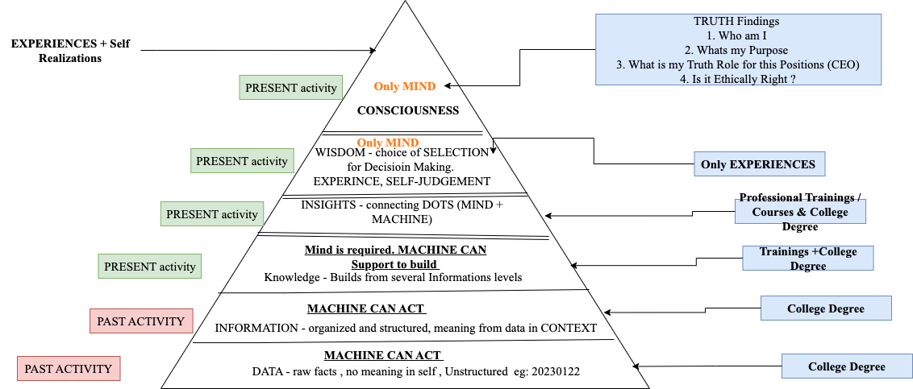

Spirituality & Wisdom: You are Wisdom only when you are Spritual. Consciousness & Truth
Self-Reflection and consciousness in the Learning.
Personal reflections on awareness, values, connection, and the questions that sit beyond purely technical knowledge.
Space for reflection
Spirituality can be approached in different ways across cultures and individual lives. For some, it is connected with faith and tradition; for others, it involves reflection, awareness, compassion, or a search for meaning. This page is a space to explore such questions respectfully and without assuming that everyone shares the same beliefs.
Learning and self-awareness
Education can create opportunities to notice how we think, how we respond to others, and how our choices affect the wider world. Reflection does not replace evidence or practical knowledge. It can complement them by helping people consider purpose, responsibility, and the values guiding their actions.
Technology and human responsibility
As digital systems and AI become more capable, questions about human agency, attention, fairness, and responsibility become increasingly important. Technical progress is worth considering alongside the kind of people and communities we hope it will serve.
This page is a space to explore such questions respectfully and without assuming that everyone shares the same beliefs.
Spirituality and Religion
Spirituality is to reach nearby Truth Knowledge. There is not any boundary like do and don't checklist in Spirituality alike in Religion. Religion has a task checklist ( karmakanda) to perform and to get to know the inner self. There are several gods and goddesses and you should choose those God / Goddesses that match your self-consciousness. God and Goddess will help you to reach consciousness and find out the truth.
Kali Mata - Black ( The Devil ) Infinity
Kali is the Goddess of Destruction and Death. Destruction is just one phase to Construct new things that are good for society and human beings. Death is just an End to the physical Body so that soul takes another body to start fresh life. Karma will help them to choose their next life. Wherever there is destruction, you see the Black Color as being a collective force of energy. Universe is represented in the Black color and any life there has different colors like stars, sun, earth etc.. Kali Mata represents the full universe, not only the Earth planet.
Kali Mata Yantra
Yantra is an instrument that helps to reach Sat-Chit-Anand (Truth-Consciousness/ Pure awareness- Happiness/ Joy). These capacities are stored inside human beings. However, they need to put an effort to find out Truth-Consciousness-Joy inside you. Kali Mata Yantra will guide you at the initial phase to find T-C-J. The outer four rectangle lines in a yantra represent the Fire (temperature), Earth(solid), Space (Area), and Water. By these four elements, the human physical body is constructed and after death the human body will be part of those four entities. The innermost dot at yantra is to find the pure awareness within yourself. Those between outer and inner elements are just a traversal element that help to reach at Conscious level. All things are accepted towards Kali. Kali is Universal so there is nothing any physical entity that is not accepted by Kali Mata. The only significance is you need to perform a task in a specific process for anything offered to Goddess.
Devil Era has started - AI Technology Boom
Artificial Intelligence technologies are part of the Kali age. There will be tremendous increase in the AI Models within the 10 years time frame. AI will be present ubiquitously. There won't be any field or domain where AI technologies will be absent. Slowly AI technologies will control human beings in all aspects whether their human fundamental function of life - birth, adult, old, death or any material aspects. These AI technologies give a short temper easiness to society. However in the long run, these technologies will destroy human civilization and society structures.
Wisdom
Learning is not only about knowing more. It is also about seeing more clearly.
A space for reflections on education, human development, technology, culture, and the choices that shape how we live and learn.
Knowledge and judgement
Knowledge gives us information, concepts, and methods. Wisdom asks how to use them well. In education, the distinction matters: learners need opportunities not only to remember facts, but also to question assumptions, recognise context, weigh evidence, and consider consequences.
Technology in a human context
Digital tools and AI can extend what people are able to do, but they do not remove the need for care, judgement, responsibility, and relationships. A useful educational approach asks both what a technology makes possible and what learners may need to understand before relying on it.
Education as connection
Learning can connect technical ideas with arts, language, mathematics, science, culture, nature, and everyday life. These connections can help students see knowledge as something they can use to interpret and improve the world around them.
These notes are reflective rather than prescriptive. They are intended to invite questions, dialogue, and thoughtful disagreement.
Ideas to develop
- How can schools make room for curiosity and reflection alongside assessment?
- What does responsible innovation look like in everyday education?
- How can technical learning remain connected to community and human values?
Artificial Intelligence and Wisdom
Data is the primary source of information for both humans and to make machines intelligent. As our brain gets more knowledge by seeing various data, and from which we comprehend information and knowledge. Similarly to make machines intelligent enough they need to analyze several data through algorithms often termed as AI Models. AI Models are supposed to perform certain tasks and the basis to perform those tasks are based on input of data. However, there is one point where AI does not seems to reach beyond human mind i.e. Wisdom level. AI can extract information, knowledge from data and act as a decision based system. However, Wisdom is far beyond knowledge where most of the time ethics and value play a greater role compared to data and information. The extended version of the DIKW pyramid model gives an idea of AI intelligent machines that can perform tasks and how the source of knowledge is educated by humans. The left side of the pyramid model diagram represents the source of activity for input to the machine whereas the right side of the pyramid model represents the source of activity to humans.
- Data is an unorganized form of numbers or characters in a raw fact. Raw data does not provide any meaning without context such as this number does not have any meaning 20230112. AI tools can be used to process data for understanding meaning at some context level.
- Information is structured data having a contextual meaning such as this number 20230112 has the contextual meaning 12th of January 2023. AI tools can be used to analyze information from several sources of data.
- Knowledge gives an answer related to the “how” question from the context information. Both the human mind and AI machines function as a support system to analyze data for the knowledge building process. Knowledge can be built through experience and it takes enough time to construct knowledge. knowledge is built upon experimenting things. Failure is seen as part of the knowledge building process. Failure helps to refine the knowledge.
- Wisdom is the truth of nature. Wisdom is an applied action from several choices of data, information, and knowledge at the right time and at the right place. Wisdom is at the conscious level of an individual with deep understanding on the subject. It gives decision making choices about why something was chosen as the best choice. Only the human mind would act at the wisdom level. Wisdom is a great asset for human mankind. Wisdom is greatly influenced by ethics and the value system that governs the philosophy of life. Wisdom can explain the particular choice and solutions to problems from several alternate solutions. However, wisdom can be directly taught to students.
- Consciousness is associated with Wisdom. The awareness of present moments and finding truth leads to being in a conscious phase and that governs the wisdom and philosophy of life.
- Data and Information gives details about past activity. Knowledge and Wisdom are associated with the present and future moment that governs the action to be taken now and in future.
